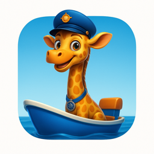

Последнее обновление: 26 сентября 2026 г.
Разработчик приложения (далее «мы») — физическое лицо, контакт указан в разделе 9. Мы не получаем доступ к данным пользователей: приложение не отправляет нам никакой информации.
| Данные | Зачем | Где |
|---|---|---|
| Настройки: звуки, музыка, вибрация, голос, язык | Чтобы игра работала так, как выбрали взрослые | Только на устройстве (локальное хранилище приложения) |
| Игровой прогресс: какие герои «сели в лодку», сколько раундов пройдено | Праздник в конце раунда и сводка в родительской панели | Только на устройстве |
Приложение не собирает имя, возраст, e-mail, телефон, геолокацию, контакты, фотографии, записи с микрофона, рекламные идентификаторы, данные об использовании и отчёты об ошибках. В нём нет регистрации и входа.
Игра предназначена для детей от 1 до 4 лет и рассчитана на совместное использование с родителями. Мы сознательно не встроили ни один инструмент сбора данных: приложение не запрашивает у ребёнка никакой информации, не содержит чатов, ссылок в интернет, покупок и рекламы. Настройки и выход из игры открываются только долгим нажатием, чтобы ребёнок не мог случайно покинуть игру или что-то изменить.
Никому. Приложение не выполняет сетевых запросов и работает без интернета. В нём нет SDK аналитики, рекламных SDK, сервисов сбора ошибок и push-уведомлений.
В текущей версии рекламы и покупок нет. Если в будущих версиях появится реклама, она будет показываться только в разделе для взрослых, будет неперсонализированной и подходящей для детей, а эта политика будет обновлена до выпуска такой версии.
Кнопка «Сбросить команду» в родительской панели удаляет игровой прогресс. Удаление приложения удаляет все его данные с устройства. Поскольку мы ничего не храним у себя, запрос на удаление нам направлять не нужно.
При изменении практик обработки данных мы обновим эту страницу и дату вверху. Существенные изменения будут отражены в описании версии в магазине приложений.
Вопросы о конфиденциальности: robtdyn@gmail.com.
Last updated: 26 September 2026
The app is developed by an individual developer ("we"); contact details are in section 9. We never receive any data from users: the app sends nothing to us.
| Data | Purpose | Where |
|---|---|---|
| Settings: sounds, music, vibration, voice, language | So the game behaves the way the grown-up chose | Device only (local app storage) |
| Play progress: which characters have "boarded the boat", rounds completed | The end-of-round celebration and the summary in the parent panel | Device only |
The app does not collect names, ages, e-mail addresses, phone numbers, location, contacts, photos, microphone audio, advertising identifiers, usage data or crash reports. There is no registration or sign-in.
The game is made for children aged 1 to 4 and is meant to be used together with a parent. We deliberately built in no data collection of any kind: the app never asks a child for information and contains no chat, no external links, no purchases and no advertising. Settings and the exit control open only with a press-and-hold so a child cannot leave the game or change anything by accident.
Nobody. The app makes no network requests and works offline. It contains no analytics SDK, advertising SDK, crash-reporting service or push-notification service.
The current version has no ads and no purchases. If a future version adds advertising, it will appear only in the grown-ups' section, will be non-personalised and child-appropriate, and this policy will be updated before that version is released.
"Reset crew" in the parent panel clears play progress. Uninstalling the app removes all of its data from the device. Because we hold nothing on our side, there is nothing to request from us.
If our data practices change, we will update this page and the date at the top. Significant changes will also be mentioned in the version notes in the app stores.
Privacy questions: robtdyn@gmail.com.